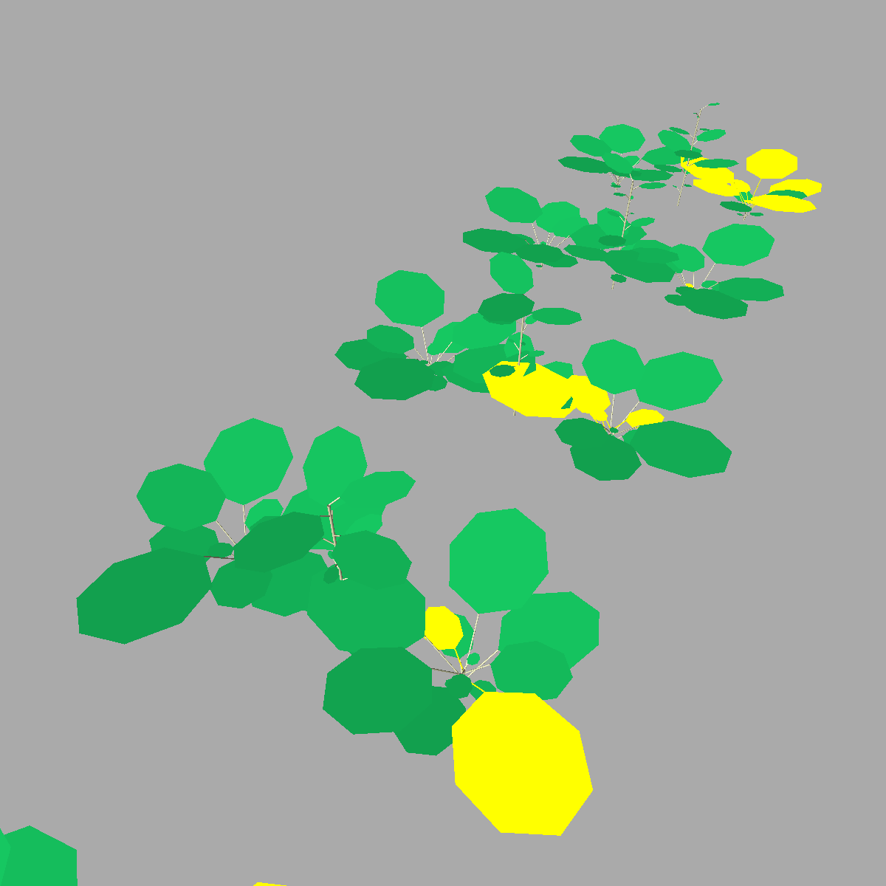

Timeline: 2 weeks || 01/12/2025 - 12/12/2025
AgendaButton is a User Interface (UI) project developed with React and Next.js. The objective was to create a sophisticated call-to-action (CTA) button for appointment scheduling, integrated into a consistent and modern design environment.
This project focuses on User Experience (UX) through advanced theming and a robust software architecture designed to handle server-side rendering constraints.

Timeline: 3 years || 01/09/2022 - 01/09/2025
Development of a plant model focusing on phenological and morphological traits. The model simulates environmental influence on resource acquisition and allocation (Light, C, N) among various shoot and root organs.